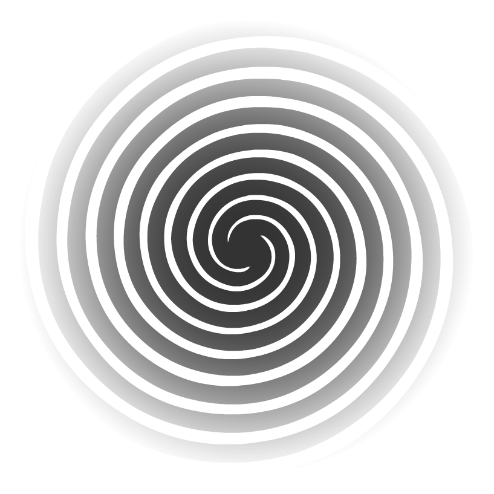

Welcome to Thought Toilet, where you can witness the popular ideations of humanity spark into life, only to be washed away instantly, down the smelly drainpipe of time.
To begin, choose a currently trending topic from the list.
Or... choose a topic for me.
To begin, choose a currently trending topic from the list.
Or... choose a topic for me.
